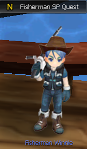
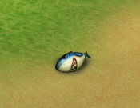
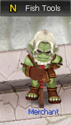
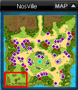
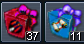
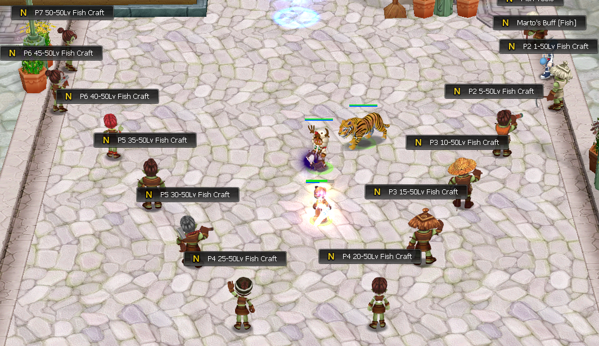

<div class="d-flex justify-content-center">
  <section class="fish-system">
    <h1 class="fish-system-title-1">Fish System <hr> </h1>

    <div class="w-75">
        <h2 class="fish-system-title-2">How to get the Angler SP?</h2>
        <p class="fish-system-text">
            You can get it from the quest in Fish Area map (there's a portal close to the statue
            in NosVille). 
            <br/>
            
            <br/>
            
            You need to kill 3 Shark Dolls in NosVille.<br/>
            
            <br/>
        </p><hr>
        <h2 class="fish-system-title-2">How to fish?</h2>
        <p class="fish-system-text">
            First, you need to buy some Baits and Fishing Lines at Fish Tool NPC <u style="color: rgb(38, 182, 25)">$warp fish</u>.
            <br/>
            <br/>
            <br/>
            <br/>
            Then you need to go in NosVille close to the Fish Area portal or in the Dander zone. <br>
            <br/>
            If you never fished before, one of the best ways to know when to use the Reel In skill is : after
            using Cast Line skill, press C to sit and wait until your char stands up automatically, then use Reel
            In.
            <div class="Video">
                <video controls width="400px">
                    <source src="../../assets/img/fish-system/fish_vid.mp4" type="video/mp4">
                </video>
                </div>
        <hr>
        <h2 class="fish-system-title-2">Fishing Maps</h2>
        <h3 class="fish-system-title-3">
            You need to level up your Angler SP to have access to fishing maps. First map is NosVille. Every 5 Lv,
             you unlock a new fishing map. Note that your char needs to be Prestige X to go on the Prestige X map.
             <br/>
              To leveling up your Angler SP you can use Ancelloan's Blessing, P5 Rune, Exp Potion and all
              equipments with "Increase fishing experience" option.<br/>
              
              
              <br/>
        </h3><hr>
        <h2 class="fish-system-title-2">What can you fish?</h2>
        <h3 class="fish-system-title-3">
            You can get Perfection Box, Tattoo Box 1 (from Lv 30), Carve Box 1 (from Lv 40) and of course 
            fishes. At the bottom right  of your inventory, you have a fish icon which is an encyclopedia 
            you can check to know which fish you're missing to complete your collection. You can get some 
            titles after completing X% of the encyclopedia.<br/>
            <br/>
        </h3><hr>
        <h2 class="fish-system-title-2">What are fish for?</h2>
        <h3 class="fish-system-title-3">
            For each map where you can fish on, there is a Fish Craft NPC at $warp fish where you can craft 
            some stuffs with your fish depending on the map you got them. You also can sell your fish at NPCs
            to get gold. You can increase the gold received by selling with Fish Merchant Title, Cuby Pet and 
            Rafting Costume.
            <br/>
        </h3><hr>
        <h2 class="fish-system-title-2">How can i make money by fishing?</h2>
        <h3 class="fish-system-title-3">
            Fishing is one of the most enjoyable and profitable activities on the server.
            You must remember that it is not enough to do SP and start fishing to earn money. As in any business - you need investment. <br/>
            First of all: if you want to earn money, always fish with two accounts at the same time. <br/>
            Secondly, earnings only start after reaching 40 jlvl on SP - that's when you start fishing out Tattoo Boxes and Carve Rune Boxes, which are the main source of earnings. <br/>
            Third: buy the necessary equipment for fishing. The list of items that boost fishing can be found <h1 class="act-four-set-title-2"><a href="https://wiki.nosvoid.com/fish-set"> here</a></h1>
            <br/>
        </h3><hr>
    </div>
  </section>
</div>
